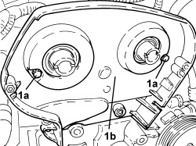

1032D31 PROTECTIVE TIMING INNER COVER - R.R. WITH TIMING BELT REMOVED
- Path
- Procedures > 10 ENGINE > 1032 TIMING SYSTEM > 1032D TIMING SYSTEM PROTECTIONS > 1032D31 PROTECTIVE TIMING INNER COVER - R.R. WITH TIMING BELT REMOVED
- Kind
- repair procedure (removal / refitting; the operation number is the code)
- Applies to
- engines: 1.8; all production periods
- Interactive page
- https://sloeber94.github.io/elrnDB-fCrm/en/#/194003019
Applies to: engines: 1.8; all production periods
 Removing
Removing
 Refitting
RefittingOp. 1036C41 PHASE TRANSFORMER ON OVERHEAD CAMSHAFT (ONE) INTAKE EXHAUST ON CYLINDER HEAD - R.R.
Op. 1008B10 POWER UNIT FRONT SUPPORT FLEXIBLE MOUNTING (TIMING SIDE) - REPLACE
Op. 1008A46 POWER UNIT RIGID SUPPORT - TIMING SIDE - R.R.
Op. 1032C10 TIMING SYSTEM MOVING TENSIONER - R.R WITH TIMING BELT/CHAIN REMOVED
1. Undo the bolts (1a) and remove the inner protective timing cover (1b).

Applies to: engines: 1.8; all production periods
Refitting
Removing- Place the timing inner protective cover back in its housing and tighten the bolts.
Op. 1032C10 TIMING SYSTEM MOVING TENSIONER - R.R WITH TIMING BELT/CHAIN REMOVED
Op. 1008A46 POWER UNIT RIGID SUPPORT - TIMING SIDE - R.R.
Op. 1008B10 POWER UNIT FRONT SUPPORT FLEXIBLE MOUNTING (TIMING SIDE) - REPLACE
Op. 1036C41 PHASE TRANSFORMER ON OVERHEAD CAMSHAFT (ONE) INTAKE EXHAUST ON CYLINDER HEAD - R.R.
Topics linked from this page (4)
- 1008A46 POWER UNIT RIGID SUPPORT - TIMING SIDE - R.R.
- 1008B10 POWER UNIT FRONT SUPPORT FLEXIBLE MOUNTING (TIMING SIDE) - REPLACE
- 1032C10 TIMING SYSTEM MOVING TENSIONER - R.R WITH TIMING BELT/CHAIN REMOVED
- 1036C41 PHASE TRANSFORMER ON OVERHEAD CAMSHAFT (ONE) INTAKE EXHAUST ON CYLINDER HEAD - R.R.